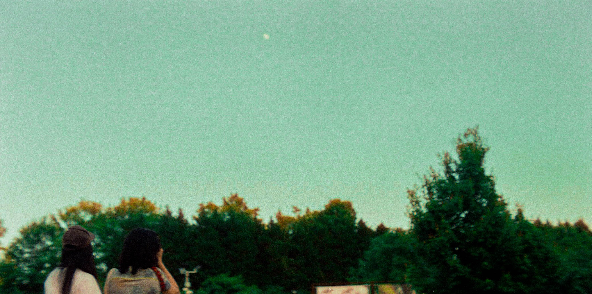

Cherrie Kwok / 郭明欣

Me, with my friend
Maya,
and the moon. Charlottesville, VA. 2023. Photo credit:
Sam
Home
Work
Contact
Contact
Email: mk7kf@virginia.edu
Github:
@mk7kf
Wikipedia:
@Palimpsestic
Twitter
Tweets by cherriekwok